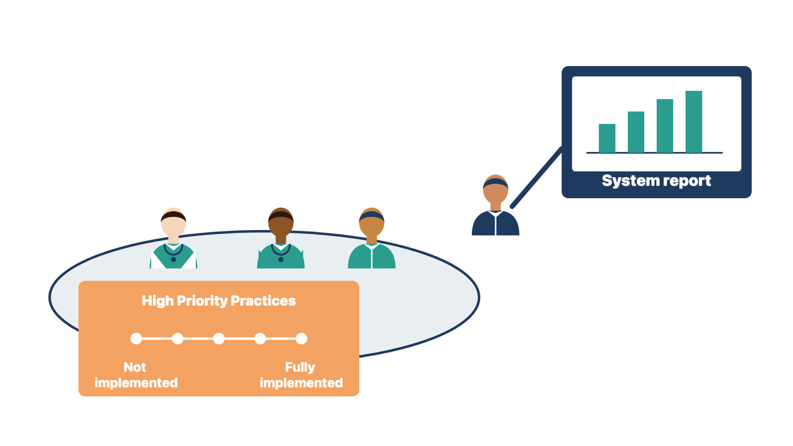

Module 13, Lesson 3: Run or repeat the SAFER self-assessment
Run or repeat the SAFER
self-assessment
Go-live changes how safe the clinic's EHR practices are. A
self-assessment shows the clinic where to act.
The SAFER Guides (Safety Assurance Factors for EHR
Resilience) are safety checklists. They come from the Office of the
National Coordinator for Health Information Technology (ONC). They help
an organization rate its own EHR safety practices. The 2025 set has
eight guides. The High Priority Practices guide collects 16 of the most
important practices from the other seven.
Each practice is rated on a five-point scale from "not implemented"
to "fully implemented," or marked as an "EHR limitation." A team
worksheet records who took part and what follow-up is planned. The
guides state that they are not a legal compliance tool.
If the clinic did a pre-live review, repeat it now. If not, this is
its first assessment. Go-live changes the answers, because patient
identification, result follow-up, inbox load, and backups now depend on
the live system. Suggest a post-live self-assessment in the 60 to 90-day
window.
The Centers for Medicare & Medicaid Services (CMS) also uses the
guide. Some clinicians report under the Merit-based Incentive Payment
System (MIPS). For the 2026 performance year, they must attest to an
annual self-assessment using the 2025 High Priority Practices guide. If
Cedar Point reports under MIPS, its quality or compliance owner decides
how and when it attests.
Your role is to organize the session, bring system evidence, and
record the ratings and follow-up owners. The clinical lead and the
clinic's team do the rating. Do not complete the ratings alone, even as
a draft for them to sign.

Figure 13.8. Notice that the clinical lead does the rating while the implementer brings the evidence.
Rule: The clinic's team rates each SAFER practice;
you bring the evidence and record the results.
At Cedar Point, you have the IT backup test log. You show it to the
team, and the clinical lead rates the backup practice. At a rural health
clinic, the quality owner wants you to "pre-fill" the worksheet. You
bring reports for each practice instead and leave the ratings blank. In
both cases, the people accountable for safety did the rating.
Check yourself
What are the SAFER Guides, and how many practices are in the High
Priority Practices guide?
Why should the clinic's team, not you, do the rating?
When should the post-live self-assessment happen?
Record lessons and
close the engagement
Without a formal close, open work drifts with no owner. Module 12
closed the implementation scope, so the post-live engagement needs its
own closure when the contracted period ends.
Hold a lessons session
Invite the people who did the work. Ask what helped and what you
would change. Record each lesson as a specific practice with an owner.
For example: "Load provider schedule templates before the log report
baseline is taken." Do not blame individuals. Send lessons about the
method to your own team. Send lessons about the clinic to the
clinic.
Close the engagement
The closure record confirms:
the 90-day review happened, with the benefits comparison
attached;
each measure has a clinic owner and a review date;
the clinic's governance group owns the backlog;
open defects and enhancements are listed with owners and decision
routes;
your remaining access is removed;
the sponsor signs the record.
Rule: List every open item in the closure record
with its owner and decision route.
At Cedar Point, one check-in screen enhancement is open on the last
contract day. You list it with its owner and decision route, then ask
for sign-off. At a multi-specialty clinic, your admin account is still
active after the final review. You have it removed and record the date.
In both cases, the record shows the real end state.
Check yourself
List four things the closure record confirms.
Why should a lesson name a specific practice and an owner?
The sponsor suggests moving an open item to the help desk queue so
the record looks clean. What would you do?
Handle renewal and
expansion talk honestly
By 90 days, the clinic trusts you, and people will ask, "Should we
buy the analytics module?" Your value in that talk is accurate facts.
The implementer does not sell.
Say what the data show, including problems a purchase would not
fix.
Send buying questions to the vendor's account owner and the client's
decision-maker.
Never tie a fix, a date, or a priority to a purchase.
Record the question and your answer in the review notes.
Rule: Give the facts, and send the buying question
to the account owner.
At Cedar Point, the sponsor asks about an analytics add-on for slow
referrals. The delay comes from an unowned queue, so you say that and
refer the purchase question. At a family clinic, low portal use comes
from staff not offering it at check-in. A new module would not change
that, and you say so. In both cases, the facts came first and the sale
went to its owner.
Check yourself
Who answers buying questions?
Why must you never tie a fix to a purchase?
Worked example:
the Cedar Point 60-day review
Cedar Point's 60-day review is next week. The measure sheet shows
mixed results.
The specialist checked each measure against its baseline and
definition. Output: a review packet. Unsigned notes older than
three days fell from 14 percent at baseline to 5 percent. First-pass
claim acceptance at Lakeshore is 88 percent against a 95 percent target.
Portal activation is 22 percent at the main clinic and 9 percent at
Lakeshore. Why: a result means little unless the definition and
population match the baseline.
The specialist asked each measure owner to explain the
gaps. Output: notes from the owners. The billing lead traced
most rejections to a missing referring-provider field on one visit type.
The practice manager observed that Lakeshore's front desk does not offer
the portal at check-in. Why: the owners know their workflows and can
confirm the cause.
The specialist answered the sponsor's purchase question with
facts. Output: a line in the review notes. The sponsor asked
about the patient-engagement add-on. The specialist reported the
Lakeshore observation, said the add-on would not change check-in
behavior, and referred the purchase question to the vendor's account
manager. Why: the implementer does not sell, and a purchase would not
fix this cause.
The specialist put both fixes before the governance
group. Output: a prioritized backlog. The group placed the
referring-provider fix first. Why: the governance group, not the
specialist, decides the order.
The specialist sent the approved fix through change
control. Output: a change record and job aid. The billing lead
approved the rule. The specialist built it, ran the regression set, and
released it with a job aid. Why: even a small billing rule can break
other claims.
The specialist set the next steps with owners.
Output: the 90-day agenda. The practice manager scheduled a 20-minute
front-desk session at Lakeshore. Both items went on the 90-day agenda
with owners and dates. Why: each review ends with decisions, owners, and
dates.
Why did the specialist ask the owners to explain the gaps instead
of explaining them alone?
Why did the specialist refer the add-on question even though the
answer seemed clear?
Why did a training session, not a build change, address the
Lakeshore portal gap?
Your turn: faded example
If you have done this task on a real project, try this first, then
compare with the worked example.
A small pediatric clinic is preparing its 30-day review. Its measure
sheet has three measures: inbox task age, schedule fill rate, and known
workarounds in use.
Check each measure against its baseline and
definition. Done: inbox tasks older than two days rose from 6
percent to 15 percent. Schedule fill rate is flat. Nurses keep a paper
list of callback requests.
Ask each measure owner to explain the gaps. Done:
the clinical lead says the new callback queue has no backup owner on the
nurse's day off. That is why nurses keep the paper list.
Answer any purchase question with facts. Your turn:
the clinic owner asks whether a vendor "task automation" add-on would
fix the inbox. What do you say, and where do you send the question?
Put the fixes before the governance group. Your
turn: what request type is the missing backup owner, and who decides its
priority?
Send any approved change through the right route.
Your turn: what route does the queue change take, and what evidence
closes it?
Set next steps with owners. Your turn: what goes on
the 60-day agenda?
Field assignment
Complete the post-live work for the practice case, Cedar Point
Internal Medicine (main clinic and Lakeshore), or the casebook. Do not
use a real project.
Write the steady-state handoff note.
Build the service-level table and escalation route.
Build a measure sheet of six to eight measures with definitions,
sources, baselines, and owners.
Run simulated 30, 60, and 90-day reviews.
Compare one purchased outcome with its baseline, with limits
stated.
Take ten backlog requests through intake, sorting, scoring, and
change control.
Write a refresher training plan and a super-user role
description.
Walk one vendor release through impact review, regression,
communication, and monitoring.
Plan a SAFER High Priority Practices self-assessment with a named
team.
Hold a lessons session and complete the engagement closure
record.
Self-check rubric. Before you finish, check your
work against these points:
Knowledge check
What signs show that the steady-state handoff is working?
Why must vendor service levels and internal targets be kept
apart?
How do the first-pass claim acceptance rate and the initial denial
rate differ?
What rules keep a benefits comparison honest?
Who decides the order of the optimization backlog, and what does the
implementer contribute?
What is the implementer's role in a SAFER self-assessment?